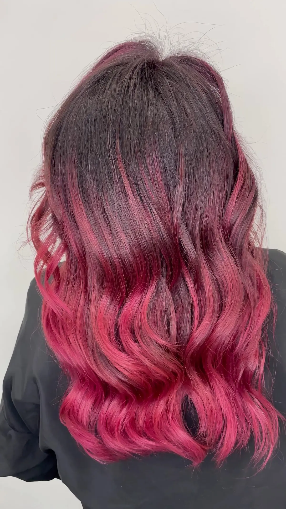
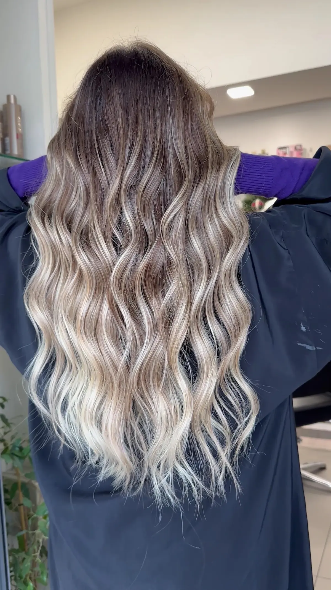
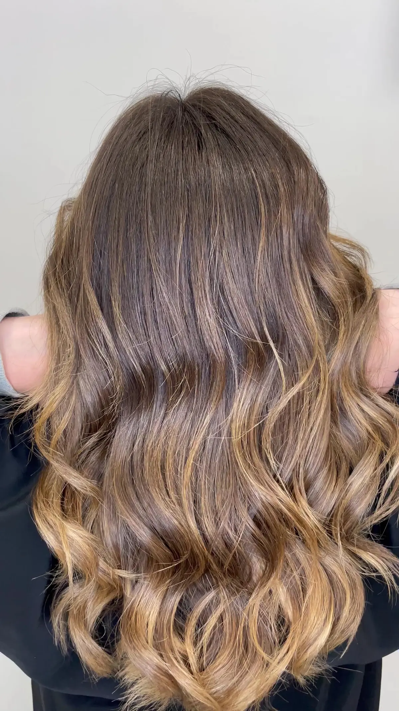

Capelli lunghi con le punte rosse, di spalle.

Barbiere e parrucchiere a Benevento, in Via Napoli, 143.
4,9217 recensioni GoogleVia Napoli, 143, 82100 Benevento, BN

Capelli lunghi con le punte rosse, di spalle.

Capelli castani a onde con riflessi caramello, di spalle.
Capelli lunghi con sfumature ghiaccio, di spalle. 4,9 su 5 su Google, 217 recensioni.
4,9 su 5 · 217 recensioni su Google. Qui sotto alcune, riportate senza modifiche (i nomi sono abbreviati).
Ieri , per la prima volta, sono andata nel salone Creative . Da premettere che i miei capelli richiedevano un miracolo per quanto disastrosi.
Il team è stato in grado di fare il miracolo , facendomi un colore fantastico , molto naturale, mai avuto prima.
Sono rimasta molto contenta del risultato, della professionalità e dell’esperienza. Grazie infinite
Chi ha capelli ricci, sa quanto possa valere uno styling dal parrucchiere: mai lo shampoo giusto, mai una piega soddisfacente, mai ricci definiti nei giorni a seguire.
Entrare in questo salone, significa lasciarsi accompagnare dalla passione e visione, che Marcello ha di questo mondo: accoglie, ascolta, osserva ed esprime la sua arte con cura estrema.
La combo perfetta tra competenza, passione e prodotti di altissima qualità, lascia ricci definiti, morbidi, luminosi e profumati per giorni.
E Piera, dal carattere accogliente ma deciso, che racconta della sua passione attraverso l'esperienza e tanta voglia di esprimersi , è valore aggiunto.
Una chicca sorprendente, della quale si può fare richiesta ,è data da una mini hair spa: luci soffuse, massaggi mirati e la solita routine , si trasforma in un momento distensivo che difficilmente si riuscirà a farne a meno.
Uscire da questo salone, significa portare con sé, la sensazione di aver finalmente trovato un luogo in cui i propri capelli vengono compresi e valorizzati. Un'esperienza di bellezza consapevole e profondamente personalizzata, che ha dato modo di ritrovare fiducia in me stessa.
Ho scelto questo salone per le recensioni positive e devo dire che sono tutte veritiere. Ho conosciuto due persone fantastiche Piera e Marcello. Con loro si entra in un mondo fatato, ti coccolano sin dal primo istante che metti piede nel negozio. Professionali e professionisti nel loro settore. I prodotti che usano sono ottimi e la loro professionalità si evince in ogni azione che compiono. Hanno saputo trasformare il mio capello ormai spento, ed hanno soddisfatto appieno ed oltre le mie aspettive. Complimenti allo staff e dulcis in fundo dico
WUAOOOOOOOOO. A Presto 👏👏👏
P. S. Le foto si riferiscono al prima e lavoro finale. Grazie
Sono entrata in questo salone con delle idee ben precise,ma prima di effettuare il magnifico lavoro,Marcello ha studiato accuratamente tutto e ascoltando ogni mia esigenza.. è inutile dire che il risultato è stato eccellente.. professionalità e gentilezza e tutto ciò che c’è in questo salone! Grazie grazie grazie! Sei il top!
⭐⭐⭐⭐⭐ Esperienza eccezionale – veri professionisti del colore e del taglio
Sono arrivata nel salone Cre-Ative (C-R-E-A-T-I-V) con i capelli completamente distrutti e apparentemente insalvabili. Avevo richiesto un balayage altrove e mi ero ritrovata invece con mesh fatte malissimo, un mix assurdo di tonalità di biondo: bianco, giallo acceso e addirittura arancione nella parte posteriore. Il mio colore naturale era praticamente scomparso, rimasto solo alla base. Una situazione davvero drammatica.
Fin dal primo momento ho ricevuto un’assistenza estremamente professionale e continua per tutta la giornata. Marcello, il titolare, e Piera, la sua assistente, sono due persone davvero d’oro: competenti, appassionate, attente e incredibilmente serie. La loro professionalità si percepisce subito, anche dal modo in cui lavorano insieme: è stato bellissimo vederli confrontarsi costantemente, parlare di capelli, analizzare le tonalità, discutere su come miscelare i colori giusti per riportarmi al mio colore naturale, cosa che sembrava impossibile visto lo stato di partenza.
Hanno fatto un lavoro straordinario: mi hanno completamente ricostruito il mio colore naturale, aggiungendo persino i riflessi giusti, quelli che avevo perso del tutto. Un risultato che definire sorprendente è poco. Si sono dedicati esclusivamente a me per ore, con una serietà rarissima: a un certo punto è entrato un cliente e gli è stato detto di no perché erano già impegnati con me. Anche questo dice tantissimo sulla loro etica professionale.
E non solo: dopo aver salvato i capelli, sono riusciti finalmente a realizzare il balayage che avevo sempre desiderato. La sfumatura è pazzesca, naturale, elegante, perfettamente armoniosa. Considerando il “prima”, il risultato finale è semplicemente spettacolare.
Il taglio merita una menzione speciale: alleggerito in modo magistrale, senza togliere la lunghezza, eseguito con tecniche moderne e una precisione che non avevo mai visto prima. Si percepisce chiaramente che sono aggiornati, esperti e che sanno esattamente cosa stanno facendo.
Consiglio Cre-Ative soprattutto per i colori: la conoscenza che hanno delle tonalità, delle miscele e dei percorsi per arrivare al risultato finale è qualcosa che non ho mai riscontrato altrove. Ma li consiglio anche tantissimo per i tagli, perché il metodo e la cura sono di altissimo livello.
Un altro aspetto fondamentale è il consulto continuo: non ti lasciano mai sola, parlano con te, ti spiegano, ti coinvolgono e verificano costantemente che il risultato sia esattamente quello che desideri. La passione che mettono nel loro lavoro si vede, si sente ed è autentica.
Infine, rapporto qualità-prezzo assolutamente perfetto: il costo è più che giusto rispetto alla professionalità, al tempo dedicato, alla cura dei dettagli e al risultato finale.
In conclusione, Cre-Ative non è solo un salone, ma un posto dove i capelli vengono davvero capiti, rispettati e valorizzati. Se cercate qualcuno che sappia fare esattamente quello che desiderate, qui siete nel posto giusto. Cinque stelle, senza il minimo dubbio. 🌟🌟🌟🌟🌟
| Lunedì | Chiuso |
|---|---|
| Martedì | 09:00–19:30 |
| Mercoledì | 09:00–19:30 |
| Giovedì | 09:00–19:30 |
| Venerdì | 09:00–19:30 |
| Sabato | 09:00–19:30 |
| Domenica | Chiuso |
Creative Salon
Via Napoli, 143, 82100 Benevento, BN
082 4362 117
Orari della scheda Google: nei festivi possono cambiare, chiamateci per conferma.
Via Napoli, 143, 82100 Benevento, BN
Un messaggio su WhatsApp, o una telefonata: vi risponde Creative Salon.